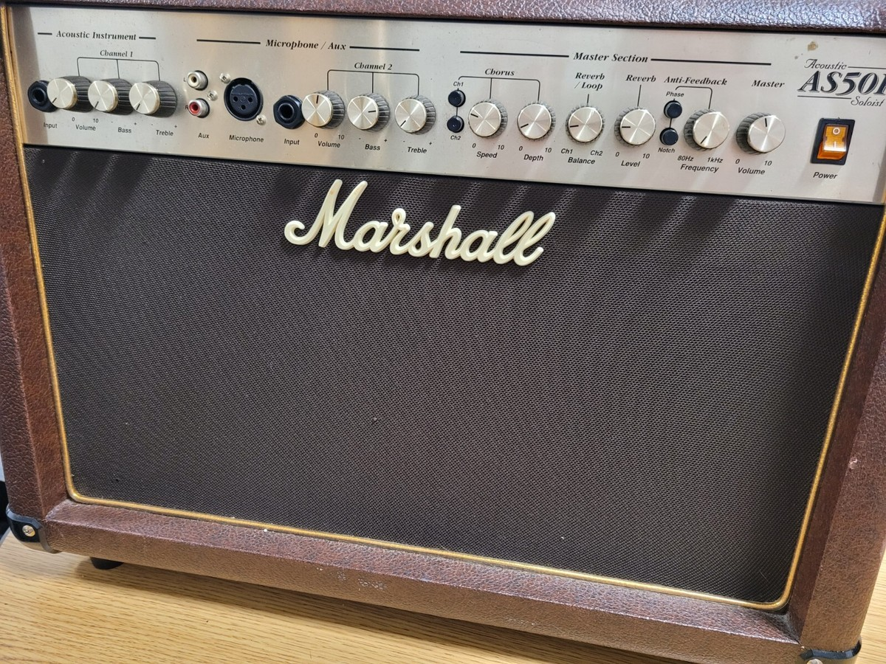
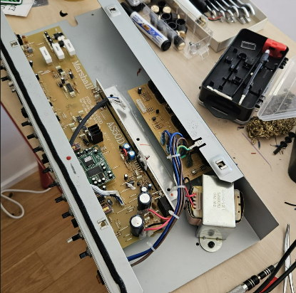
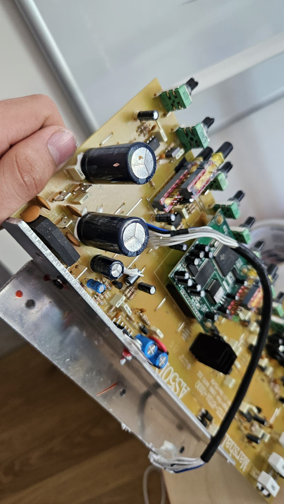
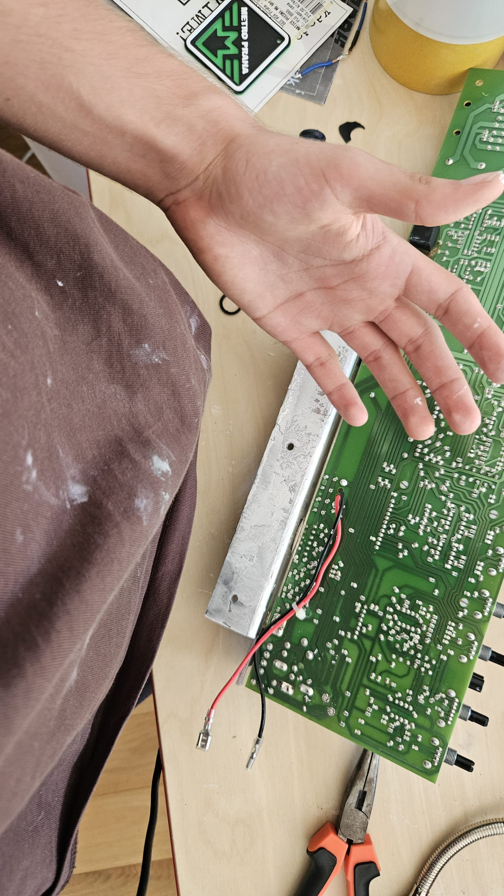

Jednoho dne po zapojení kytarového zesilovače se stala ona náhoda, zpoza zesilovače vylezl dosti smradlavý zápach, s vůní pálích se součástek. Následně oprava skončila na rodiném elektrotechnikovi (na mně).
Magický kouř
Po zapojení do sítě a zapnutí zesilovače se z něj začal linout dosti nepříjemný zápach, s vůní pálících se součástek. Teď když se na to zpětně dívám, a snažím se vymyslet proč se to stalo, tak mně napadá, že zesilovač mohla postihnout porucha kvůli přirozenému stárnutí a tepelnému opotřebení kondenzátoru, který už neudržel nápor proudového nárazu při zapnutí do sítě, případně kvůli napěťovým špičkám z nekvalitního kontaktu v zásuvce nebo rozbočce.

2. Diagnóza onoho zesilovače
Po odpojení a rozmontování zesilovače jsem zjistil, že se zřejmě spálil filtrační kondenzátor. To šlo dosti viditelně poznat podle vypouklé čepičky kondenzátoru. Jinak nic jiného jsem nenašel. Pro sichr jsem to multimetrem skontroloval nějaké zkraty, žádné ale jsem tam nenašel.
3. Výměna již zmíněného kondenzátoru
Nejprve jsem musel vyjmout plošný spoj. Nutno dodat že toto byla dosti prekerní práce. Jednak protože bylo nutné odendat z každého potenciomatru jeho čepičku, matici a podlužku. Pak byl ten plošný spoj byl dosti nepěkně uchycen k kaslíku. Také se na něm naskýtaly 2 výkonový transistory, které byly uchyceny na kus kovu, jenž byl přišroubován k kaslíku. Nutno dodat že kromě toho že by přišroubován, tak tam byla nějaká teplovodivá pasta nebo podobný blivajz.
Poté jsem se vrhnul na odpajování kondenzátoru. To šlo dosti snadno. Nutno dodat že jsem vyměnil oba kondenzátory, protože pracují v symetrické dvojici pro kladnou a zápornou větev napájení, takže zachování jednoho starého a opotřebovaného kusu by vedlo k napěťové nerovnováze, nepříjemnému brumu v reproduktoru a jeho brzkému opětovnému selhání. Následně už jen jednoduché napájení nových kondenzátorů a zpětné složení zesilovače. Po zapojení do sítě a zapnutí se z něj už žádný zápach nešel, takže oprava byla úspěšná.


